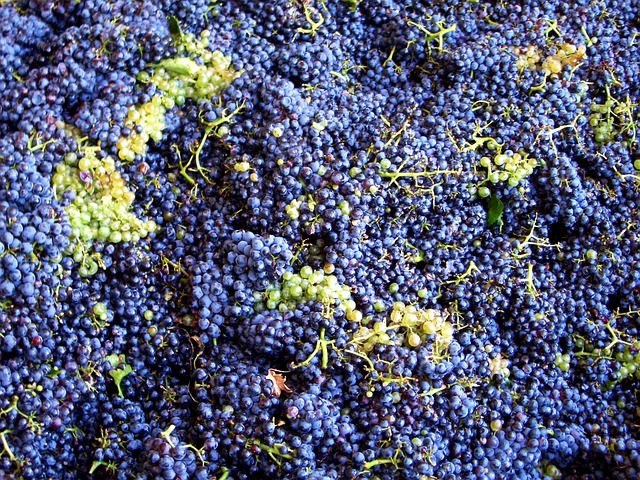
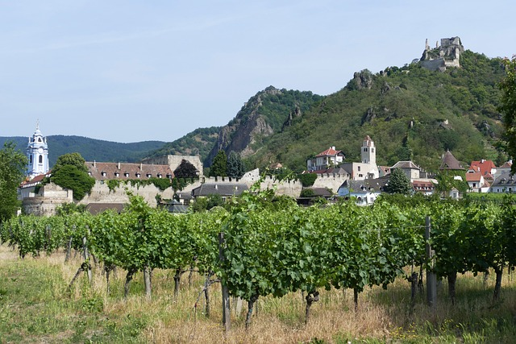
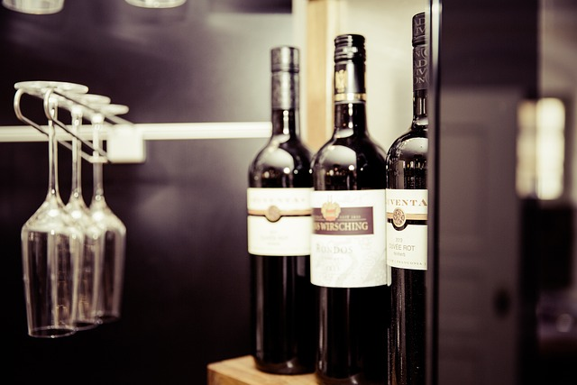

수 천 년 동안 인류에게 사랑받아온 술, 와인

KIND
와인의 품종은 와인의 맛과 향을 결정하는 중요한 요소 중 하나입니다.
각 품종마다 고유한 맛과 향이 있으며, 자신이 선호하는 품종을 찾아서 고르는 것이 좋습니다.
REGION
와인은 재배된 지역의 기후와 토양에 따라 맛과 향이 크게 달라집니다.
따라서, 어떤 지역에서 생산된 와인인지 확인하고 해당 지역에서 잘 나는 품종을 고르는 것이 좋습니다.

YEAR
와인의 연도는 포도 수확 시기와 날씨 등으로 와인의 품질이 크게 영향을 받습니다.
따라서, 좋은 연도의 와인을 찾아서 고르는 것이 좋습니다.
STYLE
와인은 생산 방식에 따라 스타일이 다릅니다.
예를 들어, 발효 방식, 적층 방식, 수확 시기 등이 와인의 스타일에 영향을 미칩니다.
따라서, 자신이 선호하는 스타일의 와인을 찾아서 고르는 것이 좋습니다.

PRICE
와인의 가격은 생산 방식, 품종, 지역, 연도 등에 따라 크게 다릅니다.
따라서, 예산에 맞는 가격대의 와인을 찾아서 고르는 것이 좋습니다.